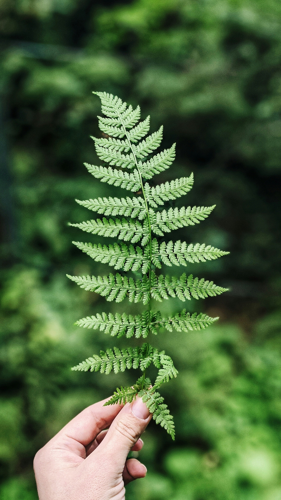
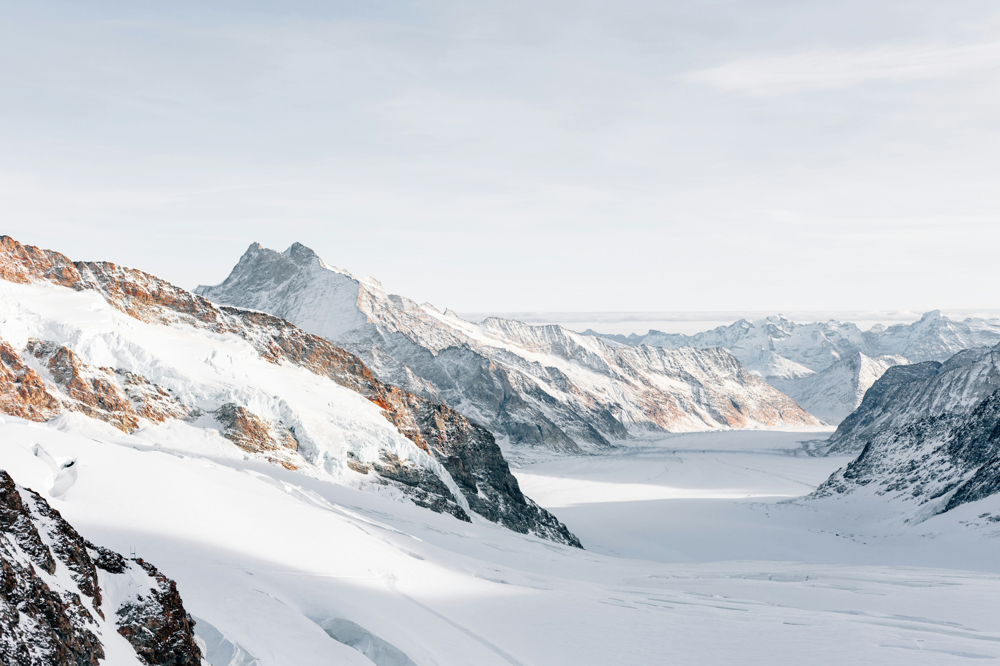
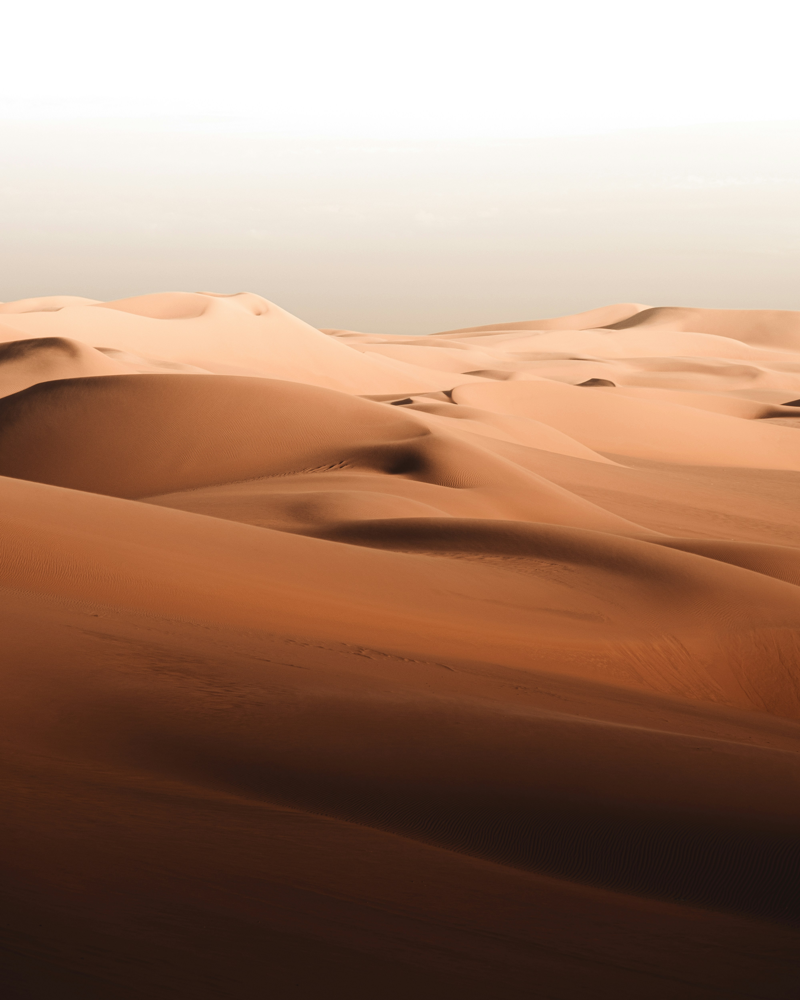
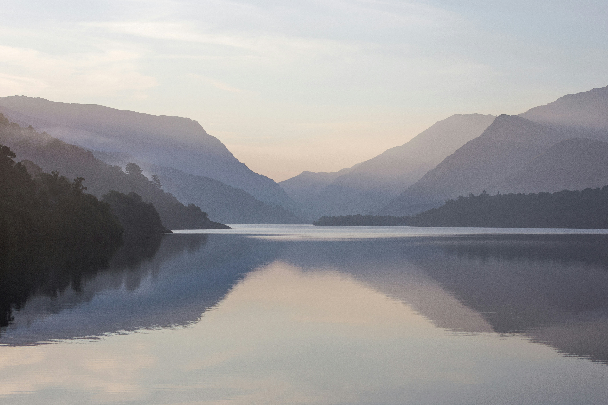

Welcome to our nature photography gallery, showcasing stunning landscapes and wildlife from around the world. Each image captures a unique environment, highlighting the natural beauty that surrounds us daily.
Please browse through our collection of mountains, forests, and oceans. This responsive gallery adapts to your screen size to ensure the best viewing experience on mobile, tablet, and desktop devices.






